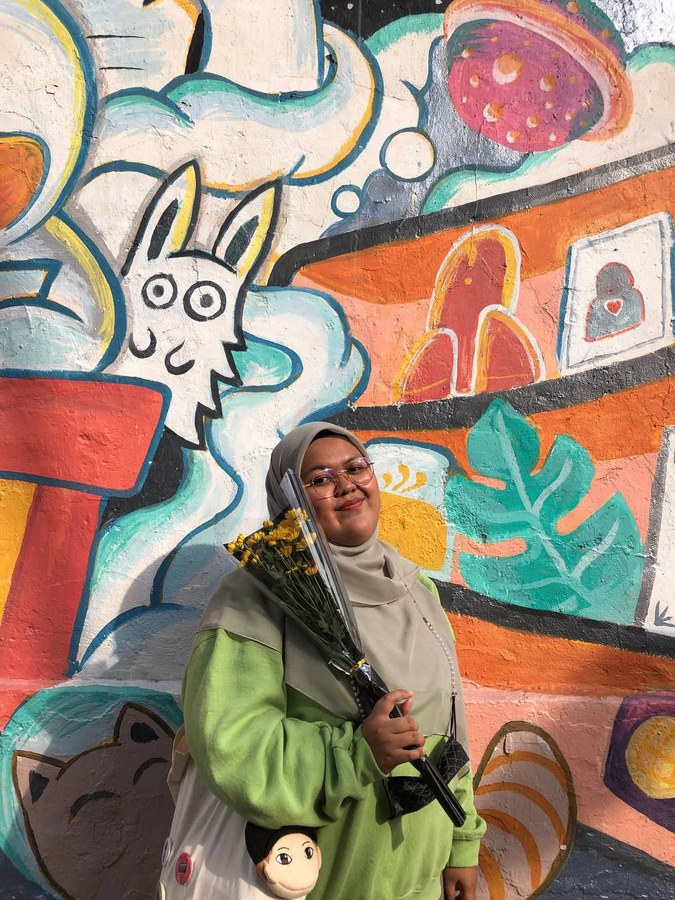

✿BIODATA✿
Little things of me and my family
About Myself

My name is Nabilah Najwa Binti Maizulrizal or people call me as "kak nab", "ommayyaa", "nab" and more. "ommayyaa" might sound a little weird but it sounds cute for me... at least :p. I may not look young but i'm not that old. I lived in Puncak Alam almost 16 years and moved to Banting earlier 2022. I have three siblings including me and i am the only daughter in my family.
I am a shy person and people find me very hard to approach because i look scary because of my face. But, I'm not scary at all. I described myself as a funny person among my friend. When i feel comfortable with someone, i can talk all day with them! it's draining sometimes but it feels fun.
I'm a family and friend person. I appreciate every friendship that happens to me even if the other person doesn't feel the same. My MBTI is INFP.. yes it is. I may not have a closet full of vintage stuffs but i love vintage and retro! Vinyl records, tapes are my favourite~ You know what to give me for my birthday present hehehe.
My name is Nabilah Najwa Binti Maizulrizal or people call me as "kak nab", "ommayyaa", "nab" and more. "ommayyaa" might sound a little weird but it sounds cute for me... at least :p. I may not look young but i'm not that old. I lived in Puncak Alam almost 16 years and moved to Banting earlier 2022. I have three siblings including me and i am the only daughter in my family.
I am a shy person and people find me very hard to approach because i look scary because of my face. But, I'm not scary at all. I described myself as a funny person among my friend. When i feel comfortable with someone, i can talk all day with them! it's draining sometimes but it feels fun.
I'm a family and friend person. I appreciate every friendship that happens to me even if the other person doesn't feel the same. My MBTI is INFP.. yes it is. I may not have a closet full of vintage stuffs but i love vintage and retro! Vinyl records, tapes are my favourite~ You know what to give me for my birthday present hehehe.
My Family

My family consists of 5 people in total. I am totally grateful to have such a kind family. "The love of a family is a life's greatest blessing" by Eva Burrows. Without my family, i won't be able to be where i'm standing right now. There's a few things we could improve as a family but no matter what happen, we will always have each other.
My dad's name is Maizulrizal Mahazir and my mother's name is Norazila binti Dawin. I have two brothers. My older brother is Haziq Naim and he's 25 years old. My younger brother is Haziq Aiman and he's 19 years old. He study in the same university as i am and in the same course as me. Time flies as i watch my family become older day by day.
Family is not defined only by last names or by blood but it's defined by commitment and love. It means to always have each other whenever they needed the most. We can improve our family relationship day by day as long as we never giving up on each other!

.gif)